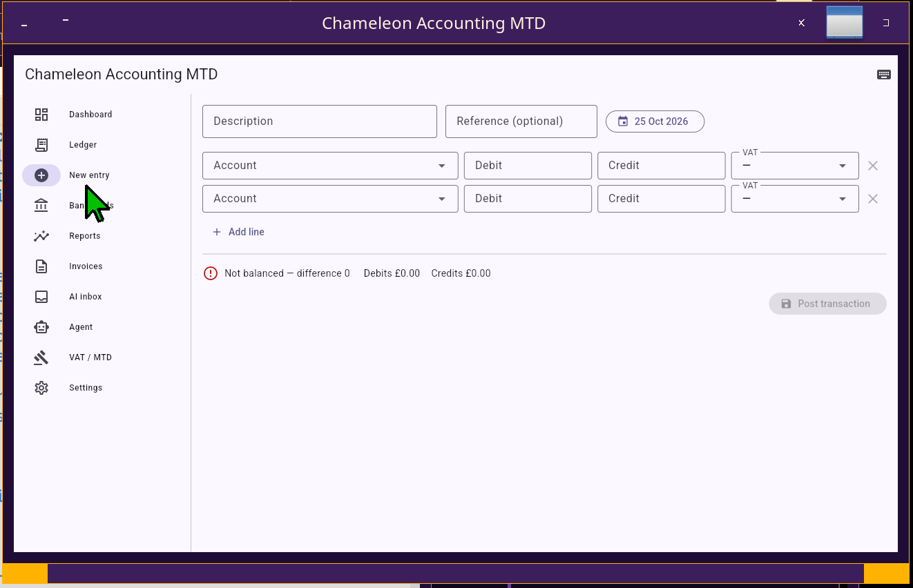
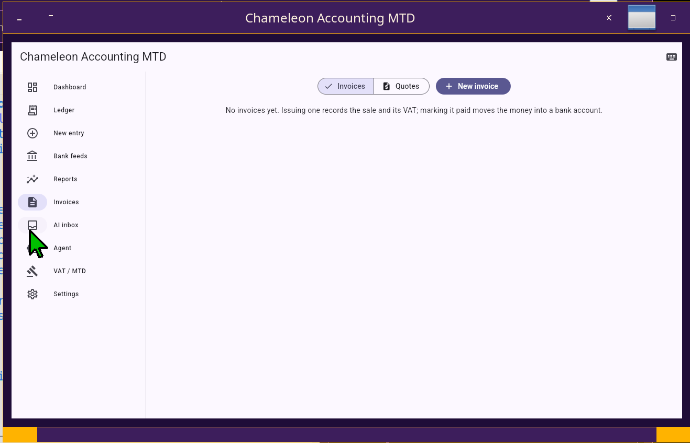
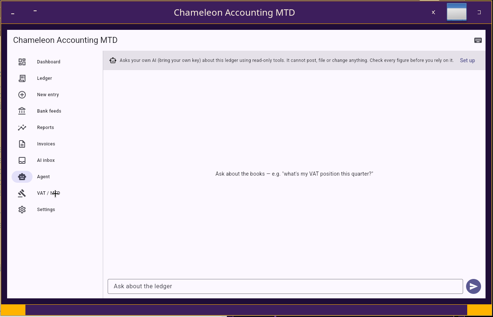
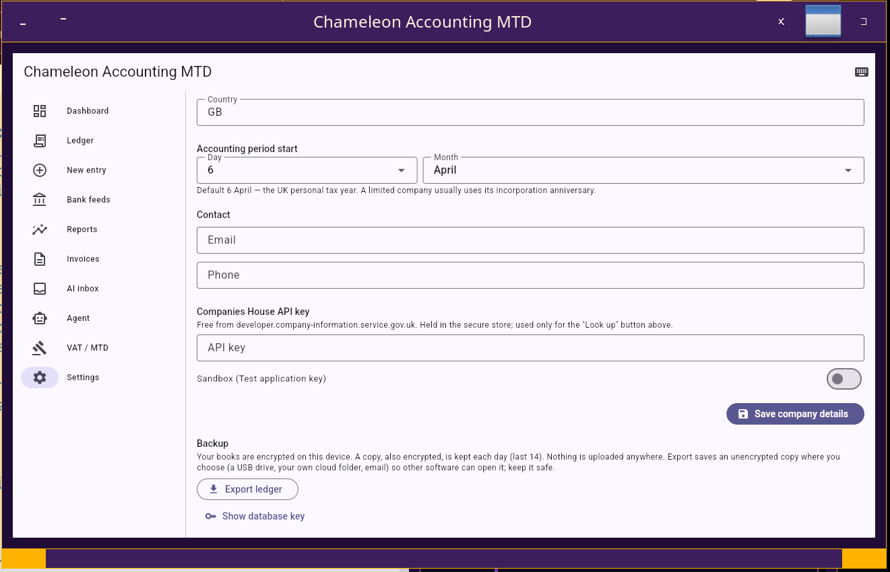
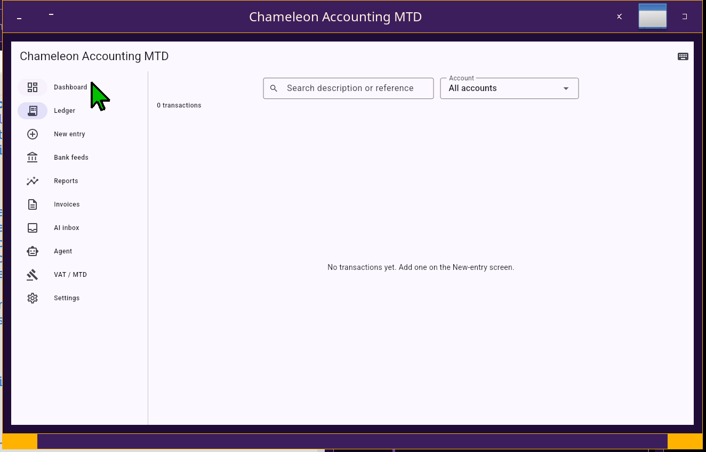
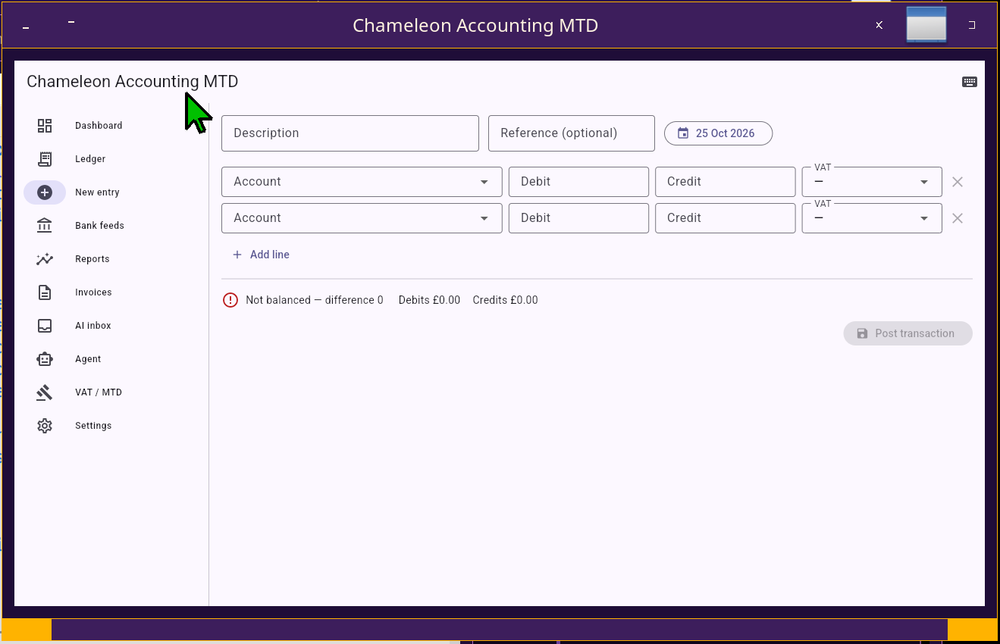
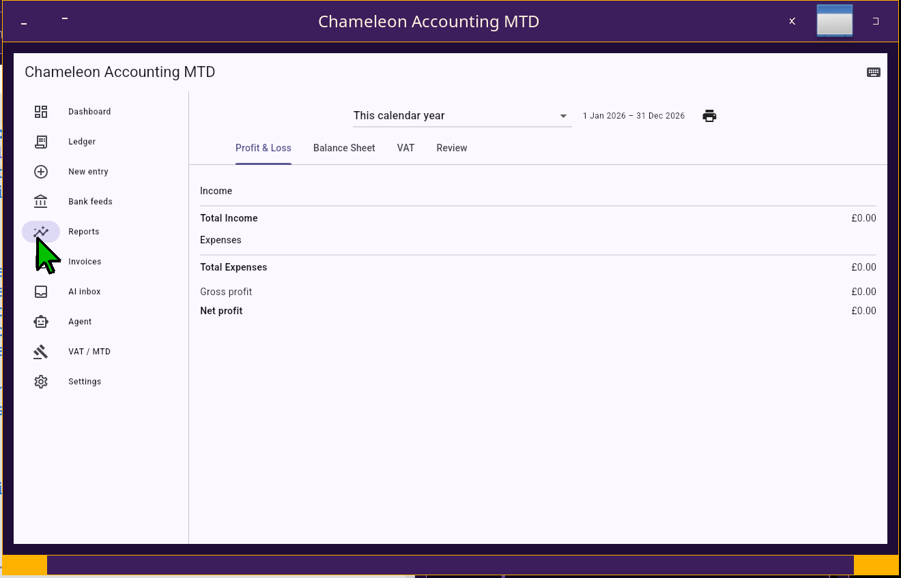
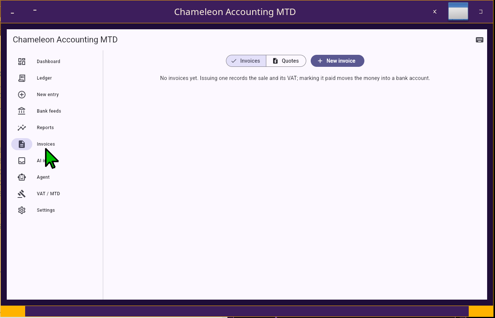
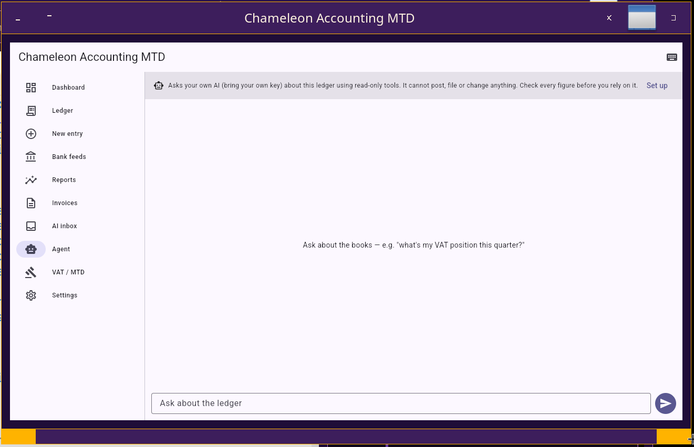
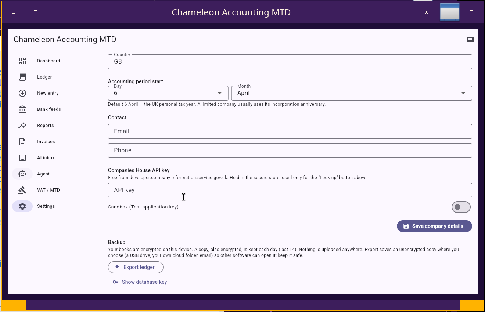

हर प्रविष्टि संतुलित होती है
उचित दोहरी प्रविष्टि — डेबिट क्रेडिट के बराबर, पैसे-पैसे तक
2026-04-01 4130 सेवाएं: एआई परामर्श 1,200.00 एस20
2026-04-01 2210 वैट नियंत्रण खाता 240.00
2026-04-01 1200 प्राप्य खाते 1,440.00
2026-04-05 7100 किराया और दरें 85.00 एस20
2026-04-05 2210 वैट नियंत्रण खाता 17.00
2026-04-05 1100 बैंक: चालू खाता 102.00
यूके चार्ट ऑफ अकाउंट्स, उपयोग के लिए तैयार
डिफ़ॉल्ट रूप से मानक यूके खाता कोड, HMRC श्रेणियों से मैप किए गए — संपत्ति, देनदारियाँ, इक्विटी, आय, व्यय। जब भी आवश्यकता हो, अपने स्वयं के खाते जोड़ें।
यह अपने काम की जाँच करता है
फोरेंसिक स्कैन किसी भी चीज़ को चिह्नित करता है जो मेल नहीं खाती — असंतुलित प्रविष्टियाँ, डुप्लिकेट संदर्भ, वैट बेमेल — इससे पहले कि वह रिपोर्ट तक पहुँचे।
यूके कर वर्ष जानता है
वर्ष-अंत 6 अप्रैल से 5 अप्रैल तक है। लाभ और हानि तथा वैट रिपोर्ट स्वचालित रूप से सही अवधि को कवर करती हैं — कोई मैन्युअल तारीख़ हेरफेर नहीं।
HMRC को आपका वैट रिटर्न दाखिल करता है
वैट के लिए पूर्ण मेकिंग टैक्स डिजिटल: यह HMRC से आपकी खुली देनदारियों को पढ़ता है, खाता बही से नौ-बॉक्स रिटर्न बनाता है, उसे जमा करता है, और पुष्टि, आपकी वैट देनदारियों और आपके भुगतानों को पुनः प्राप्त करता है — HMRC के धोखाधड़ी-रोकथाम हेडर के साथ। यह आपको एक ही अवधि दो बार दाखिल नहीं करने देगा।
वे रिपोर्ट्स जो आप वास्तव में फाइल करते हैं
लाभ और हानि, बैलेंस शीट, वैट रिटर्न सारांश — प्रत्येक खाता कोड के अनुसार विभाजित। बैलेंस शीट यह भी पुष्टि करती है कि बही-खाते संतुलित हैं: संपत्तियाँ देनदारियों और इक्विटी के योग के बराबर हैं।
पास होने वाले इनवॉइस
हर इनवॉइस में HMRC नोटिस 700 के अनुसार सभी फ़ील्ड होते हैं — अनुक्रमिक संख्या, दोनों VAT नंबर, इनवॉइस और आपूर्ति की तारीखें, प्रति-पंक्ति VAT के साथ आइटमीकृत पंक्तियाँ, नेट और VAT उप-योग। इसे प्रिंट करें, PDF सहेजें, या अपने फ़ोन पर भेजें। अपनी कंपनी का विवरण एक बार सेट करें।
आपकी किताबें आपकी ही रहती हैं
संपूर्ण बही-खाता आपके अपने कंप्यूटर या फ़ोन पर रहता है, कूट रूप दिया गया (SQLCipher v4 प्रारूप, AES-256) आपके डिवाइस के सुरक्षित स्टोर में रखी कुंजी के साथ। यह बिना इंटरनेट के काम करता है, हर दिन एक एन्क्रिप्टेड बैकअप रखता है, और आपकी पुस्तकों को कभी भी Google या Apple बैकअप पर नहीं भेजता है। जब भी आप चाहें एक साधारण प्रति निर्यात करें।
किसी भी यूके बैंक स्टेटमेंट को आयात करें
अपना बार्कलेज, एचएसबीसी, लॉयड्स, हैलिफ़ैक्स, नेटवेस्ट, नेशनवाइड, सैंटेंडर, टाइड, रेवोल्यूट, स्टार्लिंग, मोंज़ो, वाइज या पेपैल खाता जोड़ें और इसका सीएसवी या ओएफएक्स स्टेटमेंट आयात करें। प्रत्येक पंक्ति एक सुझाई गई श्रेणी और वैट दर के साथ आती है; जब तक आप इसकी पुष्टि नहीं करते तब तक कुछ भी पोस्ट नहीं होता, और दो बार आयात करना कभी भी दोगुना नहीं होता।
मानक, नकद और फ्लैट दर वैट
अपनी वैट योजना चुनें और रिटर्न उसके अनुरूप होगा: मानक लेखांकन के लिए चालान तिथि, नकद लेखांकन के लिए भुगतान तिथि, या फ्लैट दर योजना के लिए वैट-समावेशी टर्नओवर का आपके क्षेत्र का प्रतिशत।
प्रिंट, पीडीएफ और स्प्रेडशीट
अपना लाभ और हानि, बैलेंस शीट, वैट सारांश और लेनदेन प्रिंट करें, उन्हें पीडीएफ के रूप में सहेजें, या एक्सेल, लिब्रे ऑफिस कैल्क, नंबर या Google शीट के लिए सीएसवी निर्यात करें। डेस्कटॉप पर, कीबोर्ड शॉर्टकट हर अनुभाग को कवर करते हैं।
ओपन बैंकिंग बैंक फ़ीड
एक विनियमित ओपन बैंकिंग प्रदाता — GoCardless Bank Account Data या TrueLayer — के माध्यम से बैंक खाता कनेक्ट करें, और लेनदेन स्वचालित रूप से आते हैं। कनेक्शन आपकी मशीन पर चलता है; आपका बैंक डेटा और क्रेडेंशियल कभी हमारे पास से नहीं गुजरते।
फ़ीड के विरुद्ध मिलान करता है
यह प्रत्येक बैंक लाइन को पुस्तकों में पहले से मौजूद चीज़ों से मिलाता है — संदर्भ द्वारा, राशि और तिथि द्वारा, या प्राप्तकर्ता द्वारा — फिर दिखाता है कि क्या बचा है: पोस्ट करने के लिए लेनदेन, और खाता बही प्रविष्टियाँ जिन्हें बैंक ने साफ़ नहीं किया है। पुनः आयात कभी दोहरी पोस्टिंग नहीं करता।
वैट और कंपनी नंबरों की जाँच करता है
यह HMRC तक पहुँचने से पहले यूके वैट नंबर के चेक अंकों को मान्य करता है, और Companies House रजिस्टर पर किसी कंपनी का पंजीकृत नाम, स्थिति और कार्यालय देखता है।
अपनी स्थिति के बारे में पूछें
हर रिपोर्ट संरचित डेटा के रूप में भी आती है। अपनी स्वयं की AI प्रदाता कुंजी कनेक्ट करें — Anthropic, Google, या कोई भी OpenAI-संगत सेवा — और आप सरल अंग्रेजी में पूछ सकते हैं कि तिमाही कैसी दिखती है या वैट कहाँ गया। यह केवल पढ़ता और ड्राफ्ट करता है: यह कभी भी प्रविष्टि पोस्ट नहीं करता या रिटर्न दाखिल नहीं करता, और आप हर आंकड़े की जाँच करते हैं। वैकल्पिक, और जब तक आप इसे चालू नहीं करते तब तक बंद रहता है।
फ़ाइल करने से पहले जांच लें
समय-सीमा, राहतें और हर तिमाही पर एक दूसरी जोड़ी नज़र
कभी भी कोई समय सीमा न चूकें
वैट रिटर्न, कंपनी हाउस खाते और पुष्टिकरण विवरण, निगम कर भुगतान और CT600, और आयकर के लिए कर को डिजिटल बनाने के त्रैमासिक अपडेट: आपकी अपनी कंपनी और वैट तिथियों से काम किया गया, डैशबोर्ड पर दिखाया गया, 30, 14, 7, 3 और 1 दिन पहले के अनुस्मारक के साथ, यदि कोई देर हो जाए तो दैनिक।
भुगतान न किए गए चालानों पर वैट वापस
जब किसी ग्राहक ने बकाया होने के छह महीने बाद भी चालान का भुगतान नहीं किया है, तो ऐप आपको बताता है, और एक चरण में आपके द्वारा पहले से भुगतान किए गए वैट (खराब ऋण राहत, वैट नोटिस 700/18) का दावा करता है। यदि ग्राहक बाद में भुगतान करता है, तो राहत स्वचालित रूप से वापस कर दी जाती है।
दाखिल करने से पहले एक तिमाही की समीक्षा करें
अंतर्निहित परीक्षण आपके डिवाइस पर चलते हैं और कुछ भी नहीं भेजते हैं: निर्यात बिक्री पर यूके वैट लगाया जाता है, मनोरंजन पर वसूला गया वैट, खराब ऋण राहत जिसका आप दावा कर सकते हैं, वैट पंजीकरण सीमा, क्या नकद लेखांकन आपके नकदी प्रवाह, बड़ी पूंजी खरीद और विसंगति स्कैन में मदद करेगा। प्रत्येक बिंदु एचएमआरसी मार्गदर्शन के साथ आता है जिस पर यह आधारित है।
एआई समीक्षा, आपकी पसंद का विवरण
वैकल्पिक रूप से, अपने स्वयं के एआई प्रदाता से भी तिमाही की समीक्षा करने के लिए कहें। आप चुनते हैं कि यह कितना देखेगा: केवल कुल, या प्रत्येक लेनदेन। इसके सुझावों को एआई के रूप में चिह्नित किया गया है, न कि पेशेवर सलाह के रूप में। आपके द्वारा चुने गए प्रत्येक बिंदु के लिए: इसे लागू करें (आप पहले और बाद में वैट बॉक्स देखें), इसे स्वयं करें, या इसे खारिज कर दें। लागू की गई किसी भी चीज़ को पूर्ववत किया जा सकता है, और आपके द्वारा पहले ही दायर की गई तिमाही में कुछ भी पोस्ट नहीं किया जाता है।
एक ऐसी घड़ी जिस पर आप भरोसा कर सकते हैं
ऐप डिवाइस घड़ी पर भरोसा करने के बजाय एचएमआरसी, कंपनी हाउस और जीओवी.यूके के खिलाफ समय की जांच करता है, और आपको बताता है कि क्या आपकी घड़ी गलत है। समय सीमा, समीक्षाएँ और हस्ताक्षरित रिकॉर्ड सभी जाँचे गए समय का उपयोग करते हैं।
प्रत्येक कंपनी केवल एक बार खुलती है
प्रत्येक कंपनी की पुस्तकें एक समय में ऐप की केवल एक प्रति में खुली हो सकती हैं, इसलिए दो विंडो कभी भी एक ही आंकड़े पर काम नहीं करती हैं। यदि आपके पास कई कंपनियाँ हैं तो उन्हें एक साथ चलाएँ।
आपके अकाउंटेंट के साथ काम करता है
वैकल्पिक। जो साझा किया जाता है उस पर आपका नियंत्रण रहता है और आप हमेशा खुद को फाइल करते हैं।
एक एकाउंटेंट ढूँढना: सूची कैसे बनाई जाती है
विकास में: आज आप एक कार्ड के साथ आवेदन करते हैं जो एक अकाउंटेंट आपको देता है। आप जो सूची खोजेंगे वह ऐप के अंदर बनाई गई है, उन अकाउंटेंटों से जो इस ऐप का उपयोग करते हैं और सूचीबद्ध होना चुनते हैं। एक स्थापित फर्म के लिए, ऐप कंपनी हाउस की जाँच करता है: सक्रिय, एक लेखांकन व्यवसाय, खाते और पुष्टि विवरण, और कोई दिवालिया इतिहास नहीं। फर्मों को अपने मनी-लॉन्ड्रिंग पर्यवेक्षक के रजिस्टर पर भी उपस्थित होना होगा। एक एकमात्र व्यवसायी ऐप में पंजीकरण करता है और रजिस्टर की जांच, उस रजिस्टर के पते पर भेजे गए कोड और बीमा के प्रमाण के बाद ही सूचीबद्ध किया जाता है। आप देख सकते हैं कि वास्तव में क्या जाँच की गई और कब। सूचीबद्ध होना कोई सिफ़ारिश नहीं है. एक अकाउंटेंट जिसे आप पहले से जानते हैं, वह अभी भी अपने कार्ड का उपयोग कर सकता है, और ऐप कहता है कि उनकी जाँच नहीं की गई है।
एक प्रस्ताव के लिए अकाउंटेंट से पूछें
एक अकाउंटेंट का कार्ड खोलें और उन्हें उनकी सेवा के लिए अनुरोध भेजें: एक बार में अधिकतम सात अकाउंटेंट। बैंक अवकाश सप्ताहांत के लिए अनुमति देने के लिए प्रत्येक अनुरोध 48 घंटे या शुक्रवार या शनिवार को भेजे जाने पर 96 घंटे तक खुला रहता है। अकाउंटेंट स्पष्ट शब्दों में अपनी फीस दिखाते हुए एक प्रस्ताव के साथ जवाब देते हैं; आप एक स्वीकार करते हैं या अस्वीकार करते हैं। एक को स्वीकार करने से अन्य अनुरोध बंद हो जाते हैं। एक अकाउंटेंट आपको सीधे भी आमंत्रित कर सकता है।
एक समय में एक अकाउंटेंट
आप एक अकाउंटेंट को लिंक करते हैं, और फोन पर उनके साथ एक संक्षिप्त कोड पढ़कर उनकी पहचान की जांच करते हैं। कुछ भी साझा करने से पहले उनकी शर्तों और शुल्क पर आप दोनों द्वारा हस्ताक्षर किए जाते हैं। अकाउंटेंट बदलें, जब चाहें लिंक भेजना बंद कर दें या बंद कर दें।
सीलबंद, अपलोड नहीं किया गया
एक चौथाई भेजने के लिए, आप एक सारांश या पूर्ण विवरण चुनते हैं और भेजें दबाने से पहले देखते हैं कि वास्तव में क्या होगा। ऐप इसे सील कर देता है ताकि केवल आपके अकाउंटेंट का ऐप ही इसे खोल सके, और आप फ़ाइल को ईमेल, क्लाउड ड्राइव या यूएसबी द्वारा भेज दें। हम इसे कभी नहीं देखते. जिस फ़ाइल के साथ छेड़छाड़ की गई हो, या किसी और से आई हो, उसे अस्वीकार कर दिया जाता है।
समीक्षा के दौरान जमे हुए
एक चौथाई भेजने से यह फ़्रीज़ हो जाता है और आपकी पुस्तकों का डिजिटल फ़िंगरप्रिंट रिकॉर्ड हो जाता है। आप सामान्य रूप से काम करते रहें. उस तिमाही में कोई भी नई तारीख अंकित की जाती है, और आप इसे अपने अकाउंटेंट को उनकी समीक्षा के दौरान भेज सकते हैं। उनके सुधार जमे हुए संस्करण पर लागू होते हैं, इसलिए वे बाद की प्रविष्टि को कभी भी रद्द नहीं करते हैं। आप जो फ़ाइल करते हैं वह वही संस्करण है जिसे आपने पूरा कर लिया है, और आप किसी भी समय समीक्षा वापस ले सकते हैं, इसलिए कोई समय सीमा कभी नहीं रोकी जाती है।
आपके अकाउंटेंट की सलाह को अपने तरीके से लागू करें
आपके अकाउंटेंट का उत्तर समीक्षा के रूप में खुलता है। प्रत्येक बिंदु को लागू करें, इसे स्वयं करें या इसे ख़ारिज करें, या अपने आंकड़ों को तिमाही के उनके सही संस्करण के साथ बदलें: ऐप उन प्रविष्टियों को जोड़ता है जो आपकी पुस्तकों को आपके द्वारा दर्ज किए गए किसी भी चीज़ को संपादित किए बिना सटीक रूप से मेल खाती हैं। एक क्लिक से उनके बिल को अपनी किताबों में रिकॉर्ड करें।
उचित शुल्क जब आपका अकाउंटेंट आपका पैसा बचाता है
यदि आपका अकाउंटेंट आपसे बचाए गए टैक्स का एक हिस्सा लेता है, तो आपका अपना ऐप उस राशि को आपके द्वारा वास्तव में किए गए परिवर्तनों से मापता है, और आपकी सहमत शर्तों की अनुमति से अधिक किसी भी बिल को अस्वीकार कर देता है। कर जोड़ने वाले परिवर्तन कभी भी आपके विरुद्ध नहीं माने जाते।
अकाउंटेंट के लिए: अभ्यास मोड
एक ही ऐप, जिसका उपयोग एक अकाउंटेंट कई ग्राहकों के साथ करता है
वही ऐप, जिसमें अकाउंटेंट होस्ट है
लेखाकारों को अलग उत्पाद की आवश्यकता नहीं है। वे इसी ऐप का उपयोग करते हैं और प्रैक्टिस मोड खोलते हैं, जो उन्हें होस्ट बनाता है। ऐप का उपयोग करने वाले अन्य लोग अकाउंटेंट के कार्ड के साथ आवेदन करके या निमंत्रण स्वीकार करके उनके ग्राहक बन सकते हैं। ग्राहक अपनी किताबें अपने कंप्यूटर पर रखते हैं और अपने लिए फाइल करते हैं। अकाउंटेंट ऐप में अपनी किताबें भी रख सकता है, प्रत्येक ग्राहक का डेटा उसकी अपनी फ़ाइल में अलग रखा जा सकता है। एक कंप्यूटर एक अभ्यास और अपना स्वयं का क्लाइंट दोनों नहीं हो सकता है, जो दोनों पक्षों को स्वतंत्र रखता है।
ग्राहक और नए अनुरोध
अपना कार्ड अपनी फीस, मनी-लॉन्ड्रिंग पर्यवेक्षक और बीमा के साथ साझा करें। नए ग्राहकों के अनुरोध उत्तर देने के लिए शेष समय के साथ आते हैं; प्रस्ताव दें या अस्वीकार करें। आपकी क्लाइंट सूची दिखाती है कि कौन सक्रिय है, रुका हुआ है या समाप्त हो गया है, और प्रत्येक क्लाइंट के रिकॉर्ड कब हटाए जा सकते हैं।
अंतर्निहित परीक्षणों और AI के साथ समीक्षा करें
एक ग्राहक का क्वार्टर समान अंतर्निहित परीक्षणों और एक वैकल्पिक एआई ड्राफ्ट के साथ आपकी स्क्रीन पर खुलता है। बिंदुओं को संपादित करें, जोड़ें या हटाएं, और प्रत्येक की स्वयं पुष्टि करें: आपने जिसकी पुष्टि नहीं की है वह कुछ भी नहीं भेजा जा सकता है। पूरी तिमाही का एक संशोधित संस्करण तैयार करें और संपादन करते समय वैट बॉक्स बदलते हुए देखें।
आपकी शर्तों से बिल
प्रति समीक्षा शुल्क, घंटे के हिसाब से या बचत के हिस्से के रूप में, प्रत्येक ग्राहक के लिए समय रिकॉर्ड के साथ। आपका बिल ग्राहक द्वारा स्वीकार की गई शर्तों से सुझाया गया है; अपनी शर्तों को बदलें और ग्राहक आपके द्वारा इसके तहत बिल देने से पहले नए संस्करण को स्वीकार कर लें।
प्रत्येक ग्राहक का डेटा अलग-अलग रखा जाता है
प्रत्येक ग्राहक का डेटा उसकी अपनी एन्क्रिप्टेड फ़ाइल में उसकी अपनी कुंजी के साथ होता है, जो आपकी अपनी पुस्तकों से अलग होता है। यूएसबी ड्राइव पर बैकअप: प्रतियां एन्क्रिप्टेड रहती हैं, ड्राइव पर कोई कुंजी या क्लाइंट नाम नहीं होता है। पासफ़्रेज़-लॉक पुनर्प्राप्ति किट एक नए कंप्यूटर पर सब कुछ पुनर्स्थापित करता है। जब रिकॉर्ड की आवश्यकता नहीं रह जाती है, तो क्लाइंट को हटाने से उनकी कुंजी नष्ट हो जाती है, इसलिए प्रत्येक प्रतिलिपि अपठनीय हो जाती है।
स्क्रीनशॉट
Chameleon Accounting MTD — डेस्कटॉप ऐप, एक नई कंपनी के खातों पर










वैट कोड
यूके छोटे व्यवसाय को जो दरें चाहिए
मानक दर 20%
कम दर 5%
ज़ीरो-रेटेड
मुक्त करें
दायरे से बाहर
बैंक फ़ीड से HMRC तक
त्रैमासिक वैट चक्र, शुरू से अंत तक
1 · लेन-देन खींचें
ओपन बैंकिंग फ़ीड तिमाही के बैंक लेन-देन लाता है; CSV और OFX स्टेटमेंट आयात भी काम करते हैं, और रसीदें फ़ोन से आती हैं। मिलान उन्हें पहले से दर्ज चालान और खर्चों से मिलाता है।
2 · रिटर्न बनाएं और जांचें
नौ-बॉक्स वैट रिटर्न की गणना खाता बही से की जाती है। पहले एक फोरेंसिक स्कैन और अंकगणितीय जांच चलती है; आप आंकड़ों की समीक्षा करते हैं।
3 · HMRC के साथ फाइल करें
यह HMRC के साथ एक बार प्रमाणित होता है, आपकी खुली बाध्यता पढ़ता है, आवश्यक धोखाधड़ी-रोकथाम हेडर के साथ रिटर्न जमा करता है, और HMRC की रसीद, आपकी देनदारियां और आपके भुगतान संग्रहीत करता है। यह उस अवधि को फाइल करने से इनकार करता है जो पहले ही फाइल की जा चुकी है।
रसीदें आपके पास आती हैं
फोन से, और सड़क से
कंपैनियन ऐप से
रसीद की फोटो लें Chameleon Companion फ़ोन ऐप और यह डेस्कटॉप पर पहले से ही OCR द्वारा पढ़ी गई स्थिति में पहुँचती है, मूल फ़ोटो आपके ऑडिट ट्रेल के लिए सुरक्षित रहती है, और लेजर में पोस्ट होने से पहले आपकी समीक्षा की प्रतीक्षा करती है।
From Logistics 4×4
ड्राइवरों के ईंधन और व्यय रसीदें इससे प्रवाहित होती हैं Logistics 4×4 ऐप सीधे उसी लेजर में।
सीधे ड्राफ्ट में पढ़ें
ऐप में रसीद या चालान की फोटो या PDF चुनें। अपनी खुद की AI कुंजी के साथ इसे ड्राफ्ट प्रविष्टि में पढ़ा जाता है — आपूर्तिकर्ता, दिनांक, शुद्ध और वैट; या, बिना कुंजी के, एक ऑन-डिवाइस पास जो भर सकता है उसे भरता है। जब तक आप समीक्षा और पुष्टि नहीं करते, कुछ भी पोस्ट नहीं किया जाता।
Chameleon Accounting
डेस्कटॉप लाइसेंस के रूप में बेचा जाता है। यह आपकी खाता बही से आंकड़े तैयार करता है और उन्हें HMRC को फाइल करता है — आप, या आपका एकाउंटेंट, संख्याओं और प्रत्येक रिटर्न को भेजने से पहले समीक्षा करने के लिए जिम्मेदार रहते हैं. यह एक सॉफ्टवेयर टूल है, कर सलाह नहीं। अंतिम मूल्य अभी निर्धारित किया जा रहा है।
संपर्क करें 📄 उपयोगकर्ता गाइड (PDF) ← सिंहावलोकन पर वापस जाएँइसका निर्माण और परीक्षण कैसे किया जाता है
कर सॉफ्टवेयर सही होना चाहिए, इसलिए अधिकांश काम इसे साबित करने में लग जाता है
Chameleon Accounting MTD is written in Dart and Flutter, so one code base can run on Linux, Windows, macOS, Android and iOS. Marcos designs it and decides what it must do; the code is written by AI under that direction. Nothing is taken on trust: more than 500 automated tests run against each change. Some of the checks plant a deliberate error to prove that the checks really can fail. An accountant has not yet reviewed the tax rules, and that will happen before release.
1. हर दिन एचएमआरसी के सैंडबॉक्स के विरुद्ध
एचएमआरसी सॉफ्टवेयर डेवलपर्स के लिए अपनी वैट सेवा की एक अभ्यास प्रति चलाता है, जिसे सैंडबॉक्स कहा जाता है। 29 सितंबर 2026 से ऐप अपने वैट कॉल और एचएमआरसी द्वारा हर कॉल के लिए आवश्यक धोखाधड़ी रोकथाम विवरण की जांच करने के लिए, दिन में तीन बार तक स्वचालित रूप से इससे कनेक्ट हो गया है। 4 नवंबर 2026 तक यह 124 रन था, जिसमें से 108 रन पूरे हुए, 37 दिनों में से हर एक दिन में कम से कम एक पास हुआ। हमने लाइव सेवा का उपयोग करने की अनुमति के लिए एचएमआरसी को आवेदन किया है और उसके निर्णय की प्रतीक्षा कर रहे हैं। सैंडबॉक्स हमारे सॉफ़्टवेयर का परीक्षण करता है, आपके वास्तविक कर रिकॉर्ड का नहीं।
2. एक दिन में एक कर वर्ष
एक सैंडबॉक्स यह नहीं दिखा सकता कि पूरे वर्ष में क्या होता है, इसलिए हमने अपना स्वयं का सिम्युलेटर बनाया। एक नकली घड़ी पूरे साल एक बनी-बनाई कंपनी चलाती है, जिसमें एचएमआरसी, कंपनी हाउस और एक अकाउंटेंट के लिए स्टैंड-इन होता है, जबकि ऐप का असली कोड काम करता है। एक अलग उत्तर कुंजी, ऐप के साथ कोई कोड साझा किए बिना, यह पता लगाती है कि प्रत्येक अंक क्या होना चाहिए। सीधे भागो, एक साल में कुछ सेकंड लगते हैं। आप वास्तविक ऐप को 365 गुना सामान्य गति से चलते हुए भी देख सकते हैं: एक दिन में एक वर्ष, एक लाल बैनर के नीचे जो बताता है कि यह वास्तविक नहीं है।
सिम्युलेटर क्या कवर करता है
विभिन्न प्रकार के व्यवसाय: छोटे लाभ, सीमांत राहत, हानि, नकद लेखांकन, फ्लैट दर योजना, एक वर्ष का अंत जो वैट तिमाहियों से मेल नहीं खाता है, एक निदेशक जो ऋण नहीं चुकाता है, एक कंपनी जो वैट सीमा पार कर रही है, और एक एकमात्र व्यापारी। इससे यह भी पता चलता है कि क्या गलत होता है: नियोजित बहीखाता गलतियाँ, एचएमआरसी का डाउन होना, एक अकाउंटेंट का देर से जवाब देना या समीक्षा के दौरान चले जाना, और कंपनी का साल के अंत में बदलाव।
इसने क्या पाया है
वास्तविक बग, अब सभी ठीक हो गए हैं। 31 दिसंबर के बाद एक बैलेंस शीट में संतुलन बनाना बंद हो गया। दो तिमाहियों को पार करने वाले चेक ने बैंक चेक को परेशान कर दिया। निगम कर ने फ्लैट रेट योजना के तहत रखे गए वैट को नजरअंदाज कर दिया। वैट सीमा के बारे में चेतावनी उन व्यवसायों के लिए कभी प्रकट नहीं हुई जिन्हें इसकी आवश्यकता थी। टैक्स रिटर्न रिमाइंडर रिटर्न देय होने से तीन महीने पहले गायब हो गया। वसंत घड़ी परिवर्तन के दौरान उलटी गिनती एक दिन कम थी। इन्हें ढूंढना ही इसे बनाने का कारण बना।
सरकारी नियमों के विरुद्ध जाँच की गई
जहां आधिकारिक नियम प्रकाशित होते हैं, हम सीधे उनके विरुद्ध परीक्षण करते हैं। ड्राफ्ट कंपनी टैक्स रिटर्न की जांच एचएमआरसी की अपनी प्रकाशित संरचना और व्यावसायिक नियमों के अनुसार ऑफ़लाइन की जाती है। ड्राफ्ट खातों और कर गणनाओं की जाँच एक निःशुल्क, स्वतंत्र जाँच उपकरण अरेले का उपयोग करके आधिकारिक टैग सूचियों के विरुद्ध की जाती है। एक सिम्युलेटर केवल वही साबित कर सकता है जो हम किसी सेवा के बारे में मानते हैं, इसलिए हम एचएमआरसी की मुफ्त सत्यापन सेवा का भी उपयोग करते हैं। 5 नवंबर 2026 को इसने बनी-बनाई कंपनियों के लिए परीक्षण रिटर्न स्वीकार किए, और इसमें तीन बग पाए गए जो हमारे स्वयं के चेक में छूट गए थे। उत्तीर्ण होने से पता चलता है कि परीक्षण रिटर्न वैध है। इसका मतलब यह नहीं है कि एचएमआरसी ने सॉफ्टवेयर को मान्यता दे दी है, और कोई वास्तविक रिटर्न नहीं भेजा गया है।
3. अगला, संभावित रूप से: वैधानिक खाते
हमारे पास सूक्ष्म-इकाई (एफआरएस 105) या छोटी कंपनी (एफआरएस 102 धारा 1ए) द्वारा तैयार किए जाने वाले वार्षिक खातों, एचएमआरसी के निर्धारित लेआउट में एक कर गणना और एक कंपनी टैक्स रिटर्न (सीटी600) के कामकाजी ड्राफ्ट हैं, जो अभी तक किसी भी रिलीज में नहीं हैं। वे एक छोटी कंपनी को अपने साल का अंत एक ही स्थान पर करने दे सकते थे। यह ऐप आज उनमें से किसी को भी फाइल नहीं कर सकता है, और हम कोई वादा नहीं करते हैं कि यह करेगा। यह एक अकाउंटेंट की समीक्षा, एचएमआरसी द्वारा कंपनी टैक्स रिटर्न के लिए सॉफ्टवेयर को पहचानने, एचएमआरसी की परीक्षण सेवाओं को पास करने और कंपनी हाउस की अपनी आवश्यकताओं पर निर्भर करता है।
लिनक्स उपयोगकर्ता: मानक कर्नेल अनुशंसित
Chameleon Accounting MTD is built and tested on the standard kernel every major Linux distribution installs. On a full रियल टाइम कर्नेल (PREEMPT_RT, अक्सर नामित किया जाता है -rt) हमने डार्ट और फ़्लटर सॉफ़्टवेयर चलाते समय कर्नेल के रीयल-टाइम लॉकिंग कोड में सिस्टम को फ्रीज और क्रैश होते देखा है; उसी संस्करण का मानक कर्नेल स्थिर था। यदि आप रीयल-टाइम कर्नेल का उपयोग करते हैं और फ़्रीज़ देखते हैं, तो अपने वितरण के मानक कर्नेल पर स्विच करें (कम विलंबता के लिए, यह preempt=full बूट विकल्प एक सुरक्षित विकल्प है)। uname -v दिखाता है PREEMPT_RT वास्तविक समय कर्नेल पर। इसका ऐप के एन्क्रिप्शन से कोई लेना-देना नहीं है.
टिप्पणियाँ
सूत्रों का कहना है
कर नियमों और इन विकासों की जाँच किसके विरुद्ध की गई, नवंबर 2026 में पढ़ें
- कंपनी अधिनियम 2006, धारा 443: खाते दाखिल करने की अवधि की गणना
- कंपनी अधिनियम 2006, धारा 444: छोटी कंपनियों द्वारा फाइलिंग
- कंपनी अधिनियम 2006, धारा 475: ऑडिट छूट विवरण
- छोटी कंपनियाँ और समूह (खाते और निदेशकों की रिपोर्ट) विनियम 2008, अनुसूची 1: प्रारूप
- वित्त अधिनियम 2026
- कंपनी हाउस: कंपनी का जीवन, वार्षिक आवश्यकताएँ
- कंपनी हाउस: परिवर्तन और तारीखों सहित, अपने कंपनी हाउस खातों को दाखिल करना
- GOV.UK: सूक्ष्म संस्थाओं, छोटी और निष्क्रिय कंपनियों के लिए खाते
- GOV.UK: निगम कर दरें और भत्ते
- GOV.UK: भत्तों को लिखने की मुख्य दर को कम करना
- HMRC: CT600 तकनीकी विशिष्टताएँ (रिम कलाकृतियाँ)
- एचएमआरसी: सीटी कंप्यूटेशंस प्रारूप सहित एक्सबीआरएल और आईएक्सबीआरएल तकनीकी विनिर्देश
- एचएमआरसी: एचएमआरसी द्वारा स्वीकृत वर्गीकरण
- एचएमआरसी: जेनेरिक आईआरमार्क विनिर्देश, संस्करण 1.2 (पीडीएफ)
- एचएमआरसी: लेनदेन इंजन, दस्तावेज़ सबमिशन प्रोटोकॉल (पीडीएफ)
- वित्तीय रिपोर्टिंग परिषद: 2026 टैक्सोनॉमी सुइट
- ICAEW: सूक्ष्म-इकाईयों के खातों से संबंधित अक्सर पूछे जाने वाले प्रश्न
- ICAEW: यूके कंपनी का आकार सीमा अप्रैल 2025 से बढ़ जाएगी
- गोफ़ाइल: निगम कर भुगतान की समय सीमा